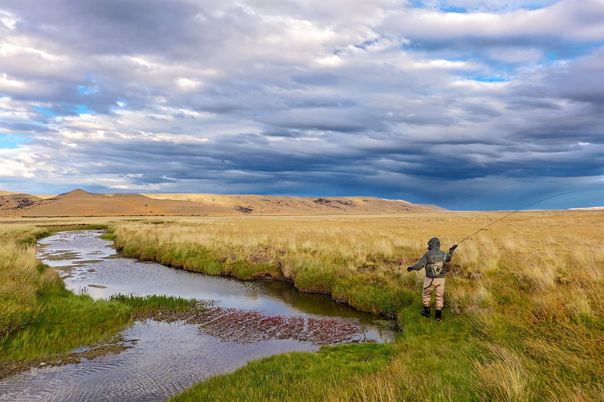
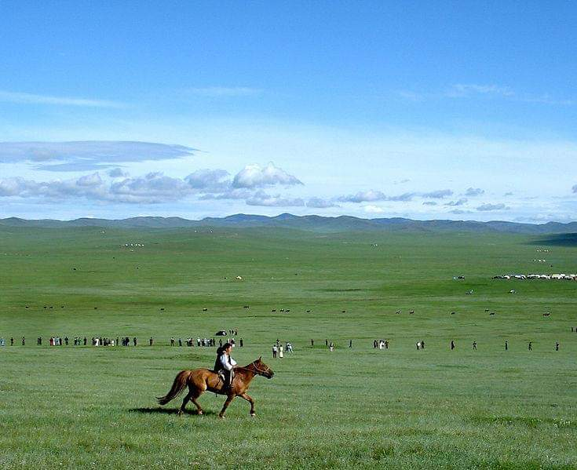
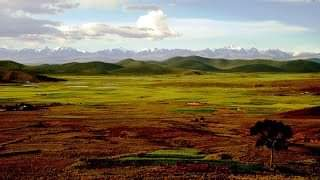
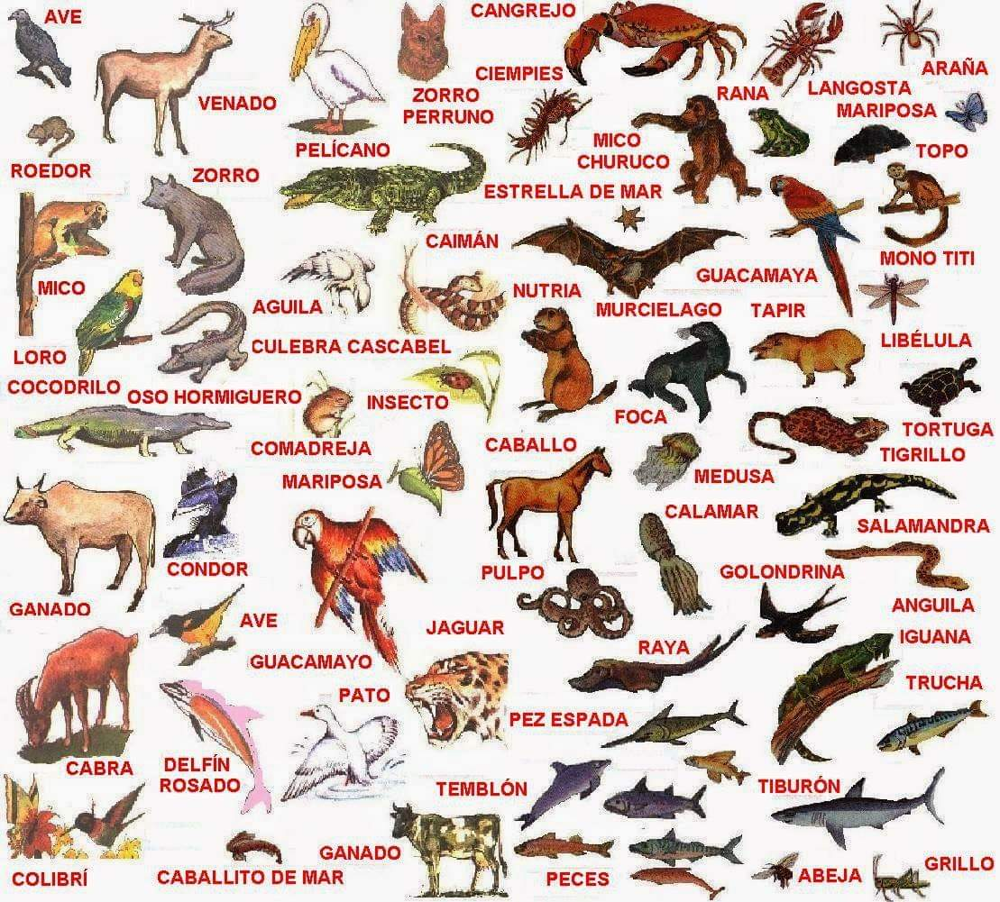
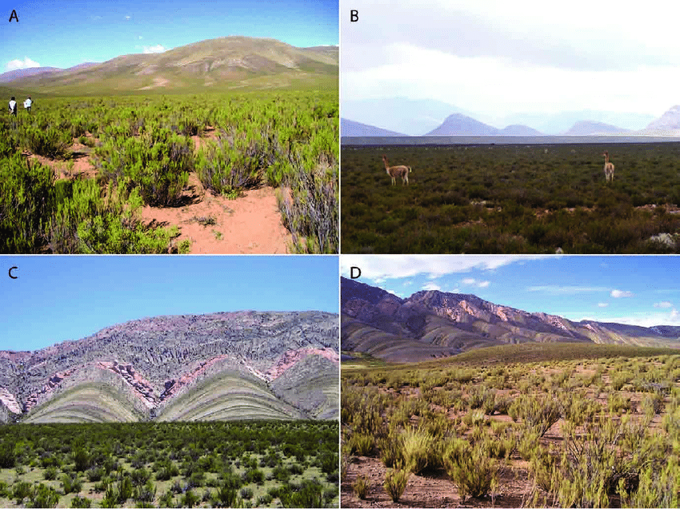

"ESTEPA" |
|---|
|
La estepa es una extensa pradera que se desarrolla en un clima continental seco y frío. En esta formación vegetal predominan los elementos herbáceos con las gramíneas como hierbas dominantes. Hay algunas estepas con árboles aislados, especialmente en el límite con los bosques y la vegetación es xerófila (adaptada a un ambiente seco y en este caso frío). Los suelos de las estepas son en general de baja fertilidad y escasa materia orgánica. Esta formación vegetal se encuentra distribuida en Eurasia, extendiéndose desde Europa oriental hasta el este de Asia. Asimismo, se pueden encontrar estepas en el cono sur de Sudamérica, en la Patagonia en Argentina y abarcando una pequeña parte de Chile. |
|  |
Los términos pradera y estepa
|
|
SUELOEn algunos casos, como en la estepa húngara (puszta) se trata de suelos alcalinos, lo cual limita también el tipo de vegetación. 
|
|
HerbívoraEsta condición ha sido aprovechada por el ser humano para desarrollar sistemas productivos de cría animal (bovinos y ovinos fundamentalmente). |
|  |
TIPOS>>>La estepa de Asia Central<<< Se extiende por la llanura de Kazajistán hasta Kirguistán, Tayikistán y oeste de China (Montañas Tian o Montañas Celestiales). La estepa de Asia Oriental Incluye las extensas estepas de Mongolia y norte de China hasta Manchuria. >>>Estepa patagónica<<< Esta estepa se encuentra en el hemisferio sur en el reino biogeográfico Antártico limitando al norte con el reino Neotropical. En este caso no hay mayores barreras geográficas, solo la transición climática. Debido a esto, estas estepas reciben una importante influencia tropical, sobre todo en fauna. 
|
|